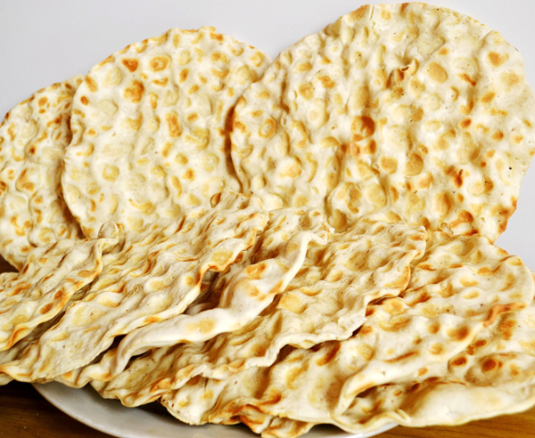
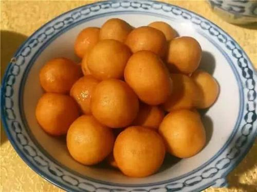

| 舌尖上的合阳 |
|---|
| 合阳地处秦晋豫黄河金三角的交界处，古称“有莘国”，历史悠久，人文郁盛，是黄河文化的重要发祥地之一。 “关关雎鸠，在河之洲；窈窕淑女，君子好逑”，一翻开中国文学的历史，首先遇到的就是《关雎》。合阳是《诗经·关雎》的发源地。《诗经》305篇中与合阳洽川有关的达三十二篇之多。 “五味三材，九沸九变，火为之纪，时疾时徐。灭腥去臊除膻，必以其胜，无失其理。”翻开中国烹饪史，遇到了伊尹。厨圣伊尹出生于合阳“夜观北斗，尽观日，作历弦、望、晦、朔、迎日推策”，三皇五帝之一的帝喾科学探索天象，物候变化规律，划分四时节令，指导人们按照节令从事农畜活动，农耕文明走进了一个崭新的时代。帝喾长眠于合阳。 原三秦文化研究会会长何金铭老人说﹕“陕西不少饭菜，都有两个显明特色:历史悠久，文化深厚。”合阳的秀美在山水，更在于美食，在这里吃到的是地地道道并且带着丰富文化和动人故事的陕西菜。 |
| 活化石——石子馍 |
|---|
|  |
| 合阳境内发现新石器时代遗址两处，一在西塬，出土有新石器时代的石斧，另一在黄河滩地上。合阳得天独厚的自然环境是作为人类聚落的基本因素。合阳东、南、北之面距河，西面是黄土峰岭，古代有两条涧水自西向东流下，合为一流后再向东注入黄河。 合阳境内有多处瀵泉，常年涌水且保持恒温，在西面山峰的屏蔽之下，形成区域性的小气候，有利于农作物生长，瀵水及黄河又有鱼类资源。这些自然条件，是合阳成为新石器时代人类择居的主要原因。 石子馍是陕西民间的一种古老的传统风味小吃，也是我们祖先由生食转入熟食后，用石子导热，上烫下烙焙制而成的一种食品，其渊源可以上溯到新石器时代。“燔黍，以黍米加于烧石之上，燔之使熟也”。(《礼记.礼运》)。这种熟制方法，是中国烹饪发展史的第一个阶段，被称为“石烹阶段”。及至唐代，同州（今陕西大荔县）人把石子馍作为对封建王朝的贡品而载入《元和郡县志》，称为石鏊饼。清代学者、诗人、烹饪鉴赏家袁枚在所著《随园食单》里，称石子馍为“天然饼”并对它的制作方法做了详细的总结记述。由于石子馍具有酥脆荃香、营养丰富、经久耐存、易于消化等特点，因而在解放后称为招待嘉宾、馈赠亲友的佳品，同时，也是病人、产妇的必备食品。 在合阳只要谁家的媳妇坐月子生小孩，主家才会请人打石子馍。 打石子馍要用凹地鏊和锅铲（群众叫“翻鏊匙”），鏊下面还要糊上泥巴，以防火大烧穿。石子馍的面是发面，还要揉进盐、茴香、芝麻、调和油，有的还要倒些清油，然后擀薄上鏊。石子馍的形状有圆形、半圆形和椭圆形，群众按照自己的习惯选择不同的样式。还有一种碗口大小、一指厚的石子馍，叫“饦饦”。擀好的薄面饼放进鏊里，用烧的滚烫的石子压严。刚烤熟的是软的，放凉后就变酥了。坐在鏊前掌握锅铲的人叫“翻鏊的”，是一个举足轻重的角色，全凭他（她）定火色。火太大，烤的时间过长，容易烤焦；鏊太凉，烤的时间短，又会夹生，所以翻鏊的人一刻也不敢大意。 一天鏊翻下来胳膊又酸又痛，真有些抬不起来呢！ |
| 二.源自伊尹的“清蒸黑乌鲤” |
|---|
|
| 合阳的洽川有黄河流域最大的芦苇荡（10万亩）和最大的湿地保护区（15万亩），白天鹅、丹顶鹤、黑鹳、大鸨等百余种国家一、二级保护动物在此栖息。洽川的7处瀵泉天下独有，其中“处女泉”最为神奇，人入水不沉，泉涌沙动，如绸佛身，如沙浪浴，是名符其实的"华夏一绝"。"万亩芦荡，千眼神泉，百种珍禽，十里荷塘，一条黄河，秦晋相望"，是洽川的真实写照。《诗经·关雎》更是写道：“关关雎鸠，在河之洲；窈窕淑女，君子好逑”。 btg 传说，生于合阳百良秦庄头的伊尹，经常在洽川的芦苇荡里狩猎、捕鱼。 有一次伊尹捕了一条鲤鱼和一条黑乌鲤，两条鱼颜色不同，形状各异。伊尹回到家中时发现鲤鱼已经死去，黑乌鲤依然活蹦乱跳，生命力极其顽强。等他剥去鲤鱼鳞并将其腌制好，去杀黑乌鲤时，一看这黑乌鲤并没有鱼鳞，用手一捏，肉头厚实。尹精心烹制，用他特有的五味调汤法，做成了“清蒸鱼”。 他请来同乡一同品尝，经过大厨的精心烹饪，这鱼吃起来口感爽滑，汤鲜味美。 来尝过的人都会说“嘹咋咧”。 说起黑乌鲤的名字，据传也是由伊尹独家命名的，有一次，有个人捕到黑乌鲤后说“伊大师，这鱼这么好吃，还不知道叫啥哩。”伊尹随即说道，黄河鲤鱼是咱们这特有的红色鱼。这鱼也在咱这儿出的，你看这鱼颜色乌黑乌黑的。就叫它黑乌鲤鱼吧。”黑乌鲤也就成了合阳的一个特色标签，此后，人们只要点吃合阳名菜，“清蒸黑乌鲤”绝对是首当其冲。 |
| 三.花馍 |
|---|
| 孩提过生日及男婚女嫁，姥姥家皆要制作直径尺余的"箍拦"，即一个圆形面圈，上面塑着各种花卉动物、十二属相，分别称"麒麟送子"、"鱼儿钻莲"、"松鼠吃葡萄"、"猛虎驱邪"、"凤凰戏牡丹"、"龙凤呈祥"、"蛾儿捕菊"、"二龙戏珠"等，取其吉利。"箍拦"顾名思义，是一种管束工具，用其捆绑、拦挡、锁住孩子的灵魂，避免夭折，祝愿平安成长，长命富贵。 到了十二岁生日和结婚时，均要在天地神位之前，烧香叩头，将箍拦实地戴一下，除了上述意义之外，又有向天地交代，孩子已经长大，成家立业，祈求上苍保佑之意。到了"知天命"、"耳而顺"之年，不论散生日或是整寿，晚辈都要给长辈敬献寿桃、寿糕(高)。一般要蒸制大于拳头的桃形园馍，上面塑以桃花或梅花做装饰，涂以色彩。大型寿桃，周围塑着"松鹤延年"、"鹿鹤瓶)安(鹌鹑)"、"喜鹊登梅"、"耄耋(猫蝶)富贵(牡丹)"、"八仙庆寿"、"麻姑献寿"、"五福(蝙蝠)捧寿"、"狲猴献桃"、"福禄寿三星"等典故形象。 有的用竹签固定，插在寿桃上，有如新娘子的大花冠。这是取古代神话西王母摘蟠桃之意，祝福长辈健康长寿。 丧葬礼仪中，通常有五彩面塑和油炸面塑。五彩面塑即在馒头上塑有彩色花鸟、人物，另有生肖祭品，意为给死者赠送看家护院和驯养的动物，让其好象仍然活在人间。油炸面塑主要有龙头、龙身、麻头、傲子、车轮、灯笼、鸟兽及各类人物。原件炸好后，一件一件安装起来，小型者日"卒盘"，大型者称"牌楼"，高达一米有余，恰似金龙宝殿，灯笼挂在两旁，宛如宫门。有的还塑有唐僧、孙悟空、猪八戒等人物，企望已故亲人西游仙境。 折叠 各地分类 十里风俗不一般，各地的面塑形式和风格各异。有的以粗犷豪放见胜，有的以典雅高洁赢人，有的则以优美细腻著称。其共同特点是:造型美观，构图简练，形式多样，内容丰富，深受人们青睐。其中，要数霍州市较为突出。当姑娘出嫁的第一年，娘家必须在七月十五给女儿送数百个"羊羔儿馍"。之所以叫"羊羔儿馍"，一说古时羊即祥，取吉祥之意;又说羊羔儿活蹦乱跳，取其活泼可爱;还有一说，从前一忤逆之子，苛刻老母，屡教不改。 舅舅特意领他一起去放牧，借机劝教。其间，他见到羊羔跪在地下吃奶，感到惊奇，便问原因，舅舅趁势给他讲了乌鸦反哺，羊羔跪乳，不忘父母养育之恩的道理，孩子幡然醒悟，改邪归正。为使后代永记羊羔跪乳，便称此面塑为"羊羔儿馍"。所以，又有教育后代莫忘父母哺育恩情之意。 |
| 四.红薯丸子 |
|---|
|  |
| 红薯丸子是用红薯制作的一道甜品。红薯含有丰富的淀粉、膳食纤维、胡萝卜素、维生素A、B、C、E以及钾、铁、铜、硒、钙等10余种微量元素和亚油酸等。 |
| 合阳坊镇踅面 |
|---|
| 黄河小北干流从韩城到潼关132.5公里河道，是秦、晋两省的界河，地势平坦，水流平缓，两岸土地肥沃，人口稠密，物产丰富，工农业、商业贸易兴旺发达，社会经济繁荣昌盛，沿河设有不少大小渡口，合阳的夏阳渡就处在这一地带中心。这一地域史称西河，西接秦地，东通晋、燕、赵国，地理位置十分重要，历来为兵家必争之地。 合阳踅面恰是古时争战的产物。相传是由西汉淮阴侯韩信所创，到现在已有2000多年的历史，可称得上是“中国最古老的方便面”。汉朝初年，魏王豹反汉，韩信奉命出兵平叛，准备在洽川的夏阳渡军。假如埋锅造饭，敌兵就会从烟火的大小多少判断兵力的强弱，是兵家大忌。 为解决士兵吃饭问题，韩信让以当地盛产的荞麦为原料，烙成大饼，发给士兵，吃时用开水一泡即可，十分快捷方便，为战争的胜利起到了重要作用。说起来，这个“踅”字也是有一段故事的，“踅”字本身是个冷僻字，清代合阳有人编了一本《土音杂字》，出于好心，找了一个古音又读“xué”的“页”字来为“踅”字注音。 但不想知知道这个古音的人实在太少了，结果弄巧成拙，大家都按本音读“yè”，而没有人读“踅xué”，外地人到合阳更是按字读音，这样一来，便把“踅面”弄成“页面”了，实在是一大误会。“踅”即“折足”，是个会意字，在关中方言中是“转来转去”的意思。因为踅面从和面、摊饼到下面、捞面甚至放调料的每一个程序，都有“踅”的动作在里边，因而得名。 合阳的踅面，冬天可保存十天半月，夏天可保存两三天。合阳的踅面不仅好吃，反而在操作方面比较简单快捷，踅面可称得上是我国最早的“方便面”。 |
| 合阳黑池镇的羊肉糊饽 |
|---|
| 如果说合阳踅面带着兵戈铁马的残余记忆，那么“羊肉餬饽”的传说则带着朴素善意，更寄托着着民众对和平的向往。 据民间传说金将王镇归顺南宋，领兵南下，行至合阳时，当地老百姓曾用羊肉和烩饼招待他。南宋绍兴十年，王镇同岳飞大破金兵后，王镇也用羊肉和烩饼招待岳飞，岳飞觉得很美味，就问这是何物？王镇说：“肉是羊肉，饼子汉民叫饽饽，我们胡人很爱吃。” 岳飞说：“胡汉能成为兄弟，也可以变一家，那就叫餬饽吧。”羊肉餬饽因此而得名。 合阳黑池镇的羊肉餬饽最为有名，以油水厚、味道美、价格低廉、经济实惠的特点曾被誉为关中四大名吃之一。吃起来肉肥而不腻，瘦而不柴，饼筋而不皮，软而不粘，香气持久，鲜美适口，回味绵长。 合阳黑池羊肉糊卜:合阳黑池镇的羊肉糊饽，据民间传说是在元代由蒙族传入而遗留下来的，以油水厚、味道美、价格低廉、经济实惠的特点被誉为关中四大名吃之一。 过去曾有"宁说一盘糊饽，不吃酒席一桌"的俗谚，可见其受群众欢迎的程度。 黑池羊肉糊饽的制作工艺非常讲究。煮羊肉要用大茴、肉桂、荜拨、良姜、胡椒、茴香、表盐、草蔻、丁香等"十大调料"，还要掌握好火候。烙饼用烫面，加上青盐和碱水，揉匀，擀成一尺左右直径的圆形，然后上鏊烙到脆黄却无焦点为止。 面饼虽薄却筋道，折叠起来，用利刀切成三寸左右长、宽窄均匀的细条，备用。吃时不能用大锅统煮，常用炒瓢或小铁锅分煮，每次一盘或两盘。用原汁羊汤煮好，加羊油辣子和葱花，盛入平盘，红艳艳、油汪汪、逗人食欲。 合阳民间风俗，认为立春后万物复苏，吃羊内容易引起旧病复发，加之母着进入孕期，不宜宰杀，所以清汤羊肉和羊肉糊饽在立春之后便从市场上消失，待到家历六月后重新上市。此时羊肥汤美，正好大饱口福。 现在市场发展，一年四季都可以吃到味道鲜美的黑池羊肉糊饽。清末民初，地处南北交通要道的黑池镇有六七家羊肉糊饽店，以彭月儿老师傅传授的徒弟王有娃最为出名 。 |
日期：2020/10/24